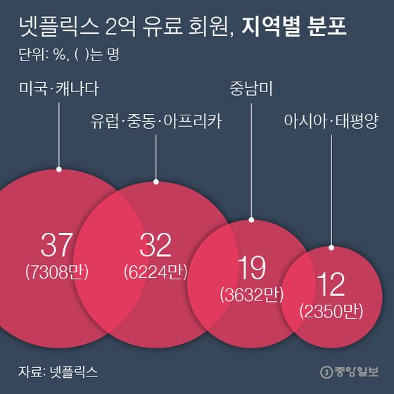

매출 늘었지만 유료회원 증가세는 뚝 20일(현지시각) 로이터통신은 넷플릭스가 3분기 매출 64억3600만 달러(약 7조2900억원)에 순이익 7억9000만 달러(약 9000억원)를 기록했다고 보도했다. 지난해 같은 기간에 비해 매출이 22.7% 늘었지만, 성장률(Y/Y) 30%를 넘던 지난해보다는 다소 세가 꺾였다.
유료 회원 신규 가입은 눈에 띄게 줄었다. 올해 1분기 1577만 명, 2분기 1009만 명이 추가로 유료 가입했다. 그러나 3분기에는 220만 명이 늘어나는 데 그쳤다. 3분기 기준 넷플릭스의 전 세계 유료 회원 수는 1억9515만 명. 회사는 연내 2억 명을 돌파할 것으로 예상했다.북미 성장 멈췄지만 한·일이 견인 지역별로 보면, 북미 시장의 정체와 아시아·태평양 시장의 성장이 두드러진다. 3분기 미국·캐나다에서는 넷플릭스 유료 회원이 18만 명 늘어나는 데 그쳤다. 신종코로나바이러스(코로나19)로 외출이 제한됐던 지난 1, 2분기에는 각각 231만, 294만 명씩 늘어났었다.
반면 아태 지역 유료 회원은 3분기에 101만 명 늘었다. 이 기간 유료회원 증가분의 46%가 아태 지역에서 나온 것이다. 이 지역 분기 매출은 전년 동기 대비 66% 상승했다. 주축은 한국과 일본. 넷플릭스는 투자자에게 보낸 레터에서 “특히 한국과 일본의 가정 인터넷 연결 사용자에서 두 자리 수 점유율을 이뤄낸 결과”라고 적었다.
아시아 콘텐트 중요성 커져 넷플릭스에게 아태 지역은 점차 중요해지고 있다. 전 세계 유료회원 중 아태 거주자 비율은 12%로, 지난해 같은 기간의 9%보다 3%p 늘었다. 북미 회원의 비중은 1년 새 42%에서 37%로 줄었다.
아시아 소비자가 콘텐트에 돈을 쓰지 않는다는 통념과 달리, 가입자 당 매출(ARPU)도 낮지 않다. 넷플릭스가 공개한 아태 지역 소비자의 ARPU는 9.2달러로 중남미(7.2달러)보다 높았다.
로이터는 넷플릭스가 2015년 이후 한국 콘텐트 공동제작 등에 7억 달러(약 7900억원)를 투자했다고 보도했다. 넷플릭스는 투자자 레터에서 “지역 언어로 된 콘텐트에 계속 대거 투자할 것”이라며 “다수의 한국 드라마들이 아태 지역과 그 너머로 퍼져가고, 아니메(일본 애니메이션)도 전 세계 팬을 거느린 분야”라고 설명했다.
{kind=link}
{kind=link}